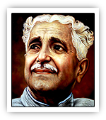

|

|
| ಜನನ |
29 ಡಿಸೆಂಬರ್ 1904, ಕಿಕ್ಕೆಂಡೂರು, ಶಿವಮೊಗ್ಗ ಜಿಲ್ಲೆ
|
| ಪ್ರಶಸ್ತಿ |
ಗೌರವಗಳು ಮತ್ತು ಪ್ರಶಸ್ತಿಗಳು
ಜ್ಞಾನಪೀಠ ಪ್ರಶಸ್ತಿ (1967)
- ಕನ್ನಡದ ಮೊದಲ ಜ್ಞಾನಪೀಠ ಪ್ರಶಸ್ತಿ ಪುರಸ್ಕೃತ
- ಪದ್ಮಭೂಷಣ
- ಕೇಂದ್ರ ಸಾಹಿತ್ಯ ಅಕಾಡೆಮಿ ಪ್ರಶಸ್ತಿ
- ರಾಷ್ಟ್ರಕವಿ ಬಿರುದಂಕಿತ
|
| ಪ್ರಮುಖ ಕೃತಿಗಳು |
ಅಮರ ಕೃತಿಗಳು
ಶ್ರೀ ರಾಮಾಯಣ ದರ್ಶನಂ, ಕಾವ್ಯ, ನಾಟಕಗಳು
- ಶ್ರೀ ರಾಮಾಯಣ ದರ್ಶನಂ — ಭಾರತೀಯ ತತ್ತ್ವಶಾಸ್ತ್ರದ ನವೀನ ವ್ಯಾಖ್ಯಾನ
- ಕನ್ನಂಬೆ (ಕಾದಂಬರಿ)
- ಕೂಪಮಂಡೂಕ (ನಾಟಕ)
- ಒಲವೇ ಜೀವಧಾರೆ (ಕಾವ್ಯ ಸಂಕಲನ)
- ನಾನೂ ನಿನ್ನವನು (ತತ್ತ್ವಚಿಂತನೆ)
|
| ಮರಣ |
ಅಂತ್ಯ ಮತ್ತು ಪರಂಪರೆ
11 ನವೆಂಬರ್ 1994, ಜಿಗಲಿ, ಕಾವೇರಿ
- ಕನ್ನಡ ಸಾಹಿತ್ಯದಲ್ಲಿ ಯುಗಪ್ರವೃತ್ತಿ ಸೃಷ್ಟಿಸಿದವರು
- “ವಿಶ್ವಮಾನವತಾವಾದ” ತತ್ತ್ವದ ಪ್ರವರ್ತಕ
- ಕವಿ, ಚಿಂತಕ, ಶಿಕ್ಷಕ — ಕನ್ನಡದ ಸಕಲಮುಖಿ ವ್ಯಕ್ತಿತ್ವ
- ಕುವೆಂಪು ವಿಶ್ವವಿದ್ಯಾಲಯಕ್ಕೆ ಇವರ ಹೆಸರು
|